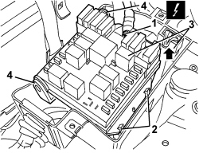

5505A13 ADDITIONAL JUNCTION UNIT IN ENGINE COMPARTMENT - R.R.
- Path
- Procedures > 55 ELECTRICAL EQUIPMENT > 5505 INSTRUMENT/GAUGE ELECTRICAL CIRCUITS > 5505A MULTI-FUNCTION COMPONENTS > 5505A13 ADDITIONAL JUNCTION UNIT IN ENGINE COMPARTMENT - R.R.
- Kind
- repair procedure (removal / refitting; the operation number is the code)
- Applies to
- all engines; all production periods
- Interactive page
- https://sloeber94.github.io/elrnDB-aBrrSpdr/en/#/946002326
Applies to: all engines; all production periods
 Removing
Removing
 Refitting
Refitting- Open the bonnet.
1. Undo the bolts (1a) and remove the cover (1b).

Applies to: all engines; all production periods
1. Disconnect the upper electrical connection.
Description | Component |
|---|---|
ENGINE COMPARTMENT JUNCTION UNIT |
2. Undo the control unit side retainers.
3. Raise the control unit.
4. Release the control unit rotating pins from the retainers.

Applies to: all engines; all production periods
1. Disconnect the lower electrical connections (1a, 1b, 1c, 1d) for the control unit.
Description | Component |
|---|---|
ENGINE COMPARTMENT JUNCTION UNIT |
2. Keep the control unit..

Applies to: all engines; all production periods
Refitting
Removing- Check that the additional junction unit is not damaged.
- Connect the lower electrical connections and position the control unit in its seat.
- Do up the rotating pins and the control unit retainers.
- Connect the upper electrical connection.
- Close the cover and tighten the bolts.
- Close the bonnet.
- Test the operation of the electrical system.
Topics linked from this page (1)
Topics that link to this page (117)
- B015 ENGINE DOES NOT START (STARTER MOTOR WORKING)
- C048 GEAR LEVER STUCK IN N
- D005 ENGINE DOES NOT PRODUCE BEST PERFORMANCE
- D009 ENGINE NOT FEELING ACCELERATOR PEDAL PRESSURE
- D012 ENGINE IDLING TOO LOW
- D014 ENGINE CUTS OUT WHEN IDLING (THEN RESTARS)
- D016 POOR ENGINE RESPONSE
- D020 ENGINE CUTS OUT WHILST RUNNING (THEN DOES NOT RESTART)
- N020 HORNS NOT WORKING
- N023 HORNS WORKING ENDLESSLY
- W010 BLACK EXHAUST FUMES
- W011 EXCESSIVE EXHAUST FUMES
- Y037 P0380 - PREHEATING UNIT CONTROL (SC TO EARTH)
- Y061 P1612 - FUEL FILTER HEATER RELAY CONTROL (SC TO EARTH)
- 1040AD FUEL PUMP RELAY CHECK
- 1040AB SUBMERGED FUEL PUMP CHECK
- 1060EB FLOW MODULATOR SOLENOID OPERATION CHECK
- 1060GG MEASURED AIR MASS CHECK
- 1060GL CHECK OPERATION OF MAIN ENGINE CONTROL UNIT RELAY
- 1060GS DEBIMETER OPERATION CHECK
- 1064BB CHECK ON OPERATION OF SUPERCHARGING PRESSURE SOLENOID VALVE (PIERBURG)
- 1064BE CHECK TURBO VALVE PROTECTION FUSE
- 1080CB E.G.R. SOLENOID FUNCTIONAL TEST
- 5505AE ENGINE MANAGEMENT CONTROL UNIT POWER SUPPLY FUSE CIRCUIT CHECK
- 5520BA ENGINE IGNITION SYSTEM CHECK
- 5520CA HEATER PLUGS FUNCTIONAL TEST
- 5530BB BATTERY VOLTAGE CHECK
- 5530BB BATTERY VOLTAGE CHECK
- 5505A28 CONTAINER FOR ADDITIONAL JUNCTION UNIT IN ENGINE COMPARTMENT - R.R.
- E1010 POWER SUPPLY SYSTEM - WIRING DIAGRAM
- E1010 POWER SUPPLY SYSTEM - COMPONENT LOCATION
- E1010 POWER SUPPLY SYSTEM - WIRING DIAGRAM
- E1010 POWER SUPPLY SYSTEM - COMPONENT LOCATION
- E2012 MAIN BEAM HEADLIGHTS - WIRING DIAGRAM
- E2012 MAIN BEAM HEADLIGHTS - COMPONENT LOCATION
- E2012 MAIN BEAM HEADLIGHTS - WIRING DIAGRAM
- E2012 MAIN BEAM HEADLIGHTS - COMPONENT LOCATION
- E2022 REVERSING LIGHTS - WIRING DIAGRAM
- E2022 REVERSING LIGHTS - COMPONENT LOCATION
- E2030 FOG LIGHTS - WIRING DIAGRAM
- E2030 FOG LIGHTS - COMPONENT LOCATION
- E3010 HORNS - WIRING DIAGRAM
- E3010 HORNS - COMPONENT LOCATION
- E3022 HEADLAMP WASHER - WIRING DIAGRAM
- E3022 HEADLAMP WASHER - COMPONENT LOCATION
- E3030 REAR SCREEN AND REAR VIEW MIRROR DEMISTING - WIRING DIAGRAM
- E3030 REAR SCREEN AND REAR VIEW MIRROR DEMISTING - COMPONENT LOCATION
- E3050 FRONT ELECTRIC WINDOWS - WIRING DIAGRAM
- E3050 FRONT ELECTRIC WINDOWS - COMPONENT LOCATION
- E3050 FRONT ELECTRIC WINDOWS - WIRING DIAGRAM
- E3050 FRONT ELECTRIC WINDOWS - COMPONENT LOCATION
- E3061 SLIDING BLIND ON ROOF - WIRING DIAGRAM
- E3061 SLIDING BLIND ON ROOF - COMPONENT LOCATION
- E3075 HEATED SEATS - WIRING DIAGRAM
- E3075 HEATED SEATS - COMPONENT LOCATION
- E3075 HEATED SEATS - WIRING DIAGRAM
- E3075 HEATED SEATS - COMPONENT LOCATION
- E3076 ELECTRICALLY ADJUSTABLE SEATS - WIRING DIAGRAM
- E3076 ELECTRICALLY ADJUSTABLE SEATS - COMPONENT LOCATION
- E3076 ELECTRICALLY ADJUSTABLE SEATS - WIRING DIAGRAM
- E3076 ELECTRICALLY ADJUSTABLE SEATS - COMPONENT LOCATION
- E3076 ELECTRICALLY ADJUSTABLE SEATS - WIRING DIAGRAM
- E3076 ELECTRICALLY ADJUSTABLE SEATS - COMPONENT LOCATION
- E3076 ELECTRICALLY ADJUSTABLE SEATS - WIRING DIAGRAM
- E3076 ELECTRICALLY ADJUSTABLE SEATS - COMPONENT LOCATION
- E3096 HOOD OPENING - WIRING DIAGRAM
- E3096 HOOD OPENING - COMPONENT LOCATION
- E3510 RADIO - WIRING DIAGRAM
- E3510 RADIO - COMPONENT LOCATION
- E3510 RADIO - WIRING DIAGRAM
- E3510 RADIO - COMPONENT LOCATION
- E3510 RADIO - WIRING DIAGRAM
- E3510 RADIO - COMPONENT LOCATION
- E3510 RADIO - WIRING DIAGRAM
- E3510 RADIO - COMPONENT LOCATION
- E3510 RADIO - WIRING DIAGRAM
- E3510 RADIO - COMPONENT LOCATION
- E3510 RADIO - WIRING DIAGRAM
- E3510 RADIO - COMPONENT LOCATION
- E3570 INTEGRATED RADIOPHONE - WIRING DIAGRAM
- E3570 INTEGRATED RADIO PHONE - COMPONENT LOCATION
- E4091 CONNECT - WIRING DIAGRAM
- E4091 CONNECT - COMPONENT LOCATION
- E5010 IGNITION AND RECHARGING - WIRING DIAGRAM
- E5010 IGNITION AND RECHARGING - COMPONENT LOCATION
- E5010 IGNITION AND RECHARGING - WIRING DIAGRAM
- E5010 IGNITION AND RECHARGING - COMPONENT LOCATION
- E5020 ENGINE COOLING - WIRING DIAGRAM
- E5020 ENGINE COOLING - COMPONENT LOCATION
- E5020 ENGINE COOLING - WIRING DIAGRAM
- E5020 ENGINE COOLING - COMPONENT LOCATION
- E5020 ENGINE COOLING - WIRING DIAGRAM
- E5020 ENGINE COOLING - COMPONENT LOCATION
- E5030 PETROL ENGINE ELECTRONIC MANAGEMENT - WIRING DIAGRAM
- E5030 PETROL ENGINE ELECTRONIC MANAGEMENT - COMPONENT LOCATION
- E5030 PETROL ENGINE ELECTRONIC MANAGEMENT - WIRING DIAGRAM
- E5030 PETROL ENGINE ELECTRONIC MANAGEMENT - COMPONENT LOCATION
- E5050 DIESEL ENGINE ELECTRONIC MANAGEMENT - WIRING DIAGRAM
- E5050 DIESEL ENGINE ELECTRONIC MANAGEMENT - COMPONENT LOCATION
- E5070 PARTICLE FILTER SYSTEM - WIRING DIAGRAM
- E5070 PARTICLE FILTER SYSTEM - COMPONENT LOCATION
- E6020 AIR CONDITIONER - WIRING DIAGRAM
- E6020 AIR CONDITIONER - COMPONENT LOCATION
- E6020 AIR CONDITIONER - WIRING DIAGRAM
- E6020 AIR CONDITIONER - COMPONENT LOCATION
- E6021 COMPRESSOR ENGAGEMENT - WIRING DIAGRAM
- E6021 COMPRESSOR ENGAGEMENT - COMPONENT LOCATION
- E6021 COMPRESSOR ENGAGEMENT - WIRING DIAGRAM
- E6021 COMPRESSOR ENGAGEMENT - COMPONENT LOCATION
- E7022 VDC - WIRING DIAGRAM
- E7022 VDC - COMPONENT LOCATION
- E7051 ROBOTIZED GEARBOX - WIRING DIAGRAM
- E7051 ROBOTIZED GEARBOX - COMPONENT LOCATION
- E7050 AUTOMATIC TRANSMISSION - WIRING DIAGRAM
- E7050 AUTOMATIC TRANSMISSION - COMPONENT LOCATION
- E7065 ELECTRIC STEERING LOCK - WIRING DIAGRAM
- E7065 ELECTRIC STEERING LOCK - COMPONENT LOCATION